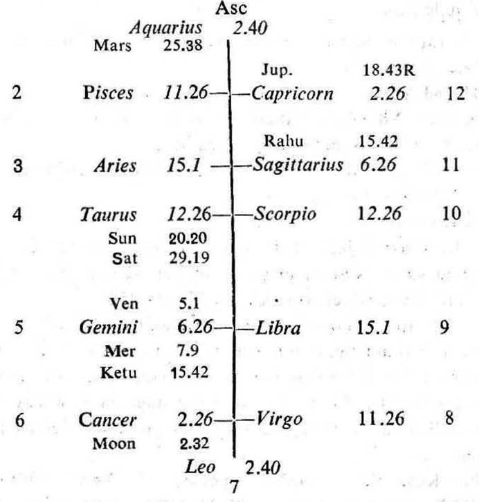
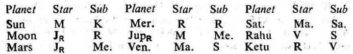
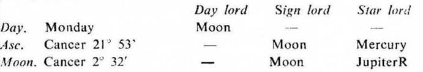

Question. Shall I get my documents back? I have lost them at any place.
Number. 210 (out of 249)
Place of Judgment. 23°N 2′, 72°E 35′
Time of Judgment. 4-6-1973, Monday; 10-35 A.M. I.S.T.


If the cuspal sub lord of 2 or 11 be the significator of 2 (movable article which is lost or stolen), 6 (loss to the thief, being 12 to the 7th-thief) or 11 (regaining), movable property will be regained during the joint period of the significators of 2, 6 and 11.
In this horary map Moon is in the star Jupiter in 12 owning 2 and 11. So Moon is the significator of 12 (loss), 2 (lost thing) and 11 (regain). Thus it clearly indicates that the query refers to the loss of documents and their regaining.
The 11th cusp is jointly ruled by Jupiter (sign lord), Ketu (star lord) and Rahu (sub lord). Jupiter is in the 12th, the 12th house denotes losing or passing away of a thing. But as Jupiter in the 12th is retrograde, it indicates that the thing cannot be lost.
Jupiter is in the star Moon owning and occupying 6; it is in the sub Mercury the significator of 11 (being in the star Rahu in 11). So Jupiter is the significator of 6 and connected with 11.
Ketu is in the star Rahu in 11; it is in the sub Venus which aspects the 11th cusp. So Ketu is the significator of 11 and connected with 11.
Rahu is in 11, it is in the star Venus which aspects the 11th cusp; it is in the sub Sun the significator of 6 (being in the star Moon in 6). So Rahu is the significator of 11 and connected with 6 and 11.
Thus the cuspal joint rulers of the 11th are the significators of 6 and 11. So the lost documents will be regained.

Moon is in the star of retrograde Jupiter. So it may be omitted. Ketu in Gemini represents Mercury; and Rahu in Sagittarius represents Jupiter. Hence the ruling planets are Mercury, Jupiter, Rahu and Ketu.
At the time of judgment (Jupiter Dasha balance 0Y 11M 16D) the querent is running the joint period of Jupiter, Rahu and Ketu.
All these three planets are among the ruling planets. They are the cuspal joint rulers of the 11th house. They are the significators of 6 and 11. So the querent will receive back his lost documents during their joint period which lasts upto 1-7-1973.
The inter period ruler Ketu will be transitting in Gemini from 15°13′ to 14°27′ in its own sub Ketu from 13-6-1973 upto 27-6-1973. So the querent will regain his documents by this time.
It was learnt from the querent that he received back his documents on 20-6-1973 at 2-20 P. M. I. S. T. from the host of the place where he forgot them. At that time Moon was transitting in Capricorn 25°1′ in the sub Rahu (the sub period ruler).